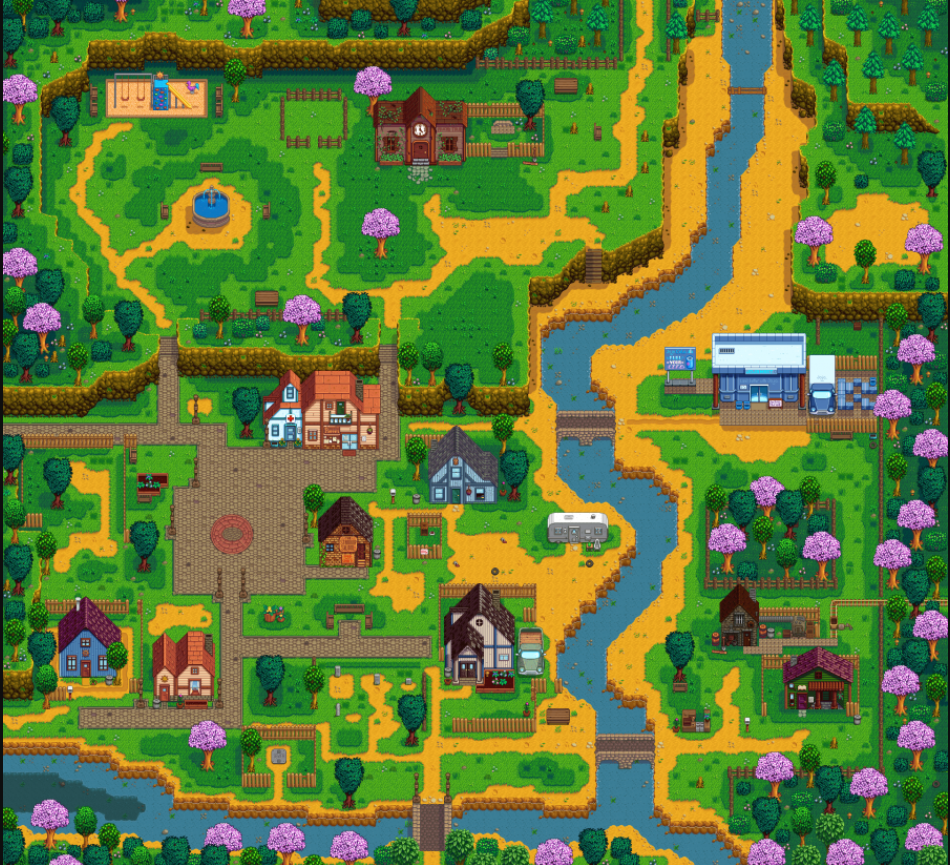

Pelican Town is where the player moves to at the start of the game, located in Stardew Valley. Pelican Town is where most of the villagers live, work, and socialize.
Lewis is the mayor of Pelican Town and has been for many years; he comments that he has not had competition for the role since first becoming mayor.
The northwest entrance to town connects to the Bus Stop and The Farm. The southwest passage connects to Cindersap Forest, which contains Marnie's Ranch, Leah's Cottage, and the Wizard's Tower. Directly south of town is The Beach. North of town connects to The Mountain, with Robin's carpenter shop, the mines, the Adventurer's Guild, the Railroad, and the Quarry.
Initially, there are weeds located near 2 Willow Lane, in the area behind 1 Willow Lane, behind JojaMart, and to the west of the Community Center, below the playground. These weeds will die during Winter, but will respawn at the start of each new year.